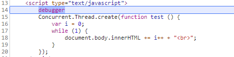
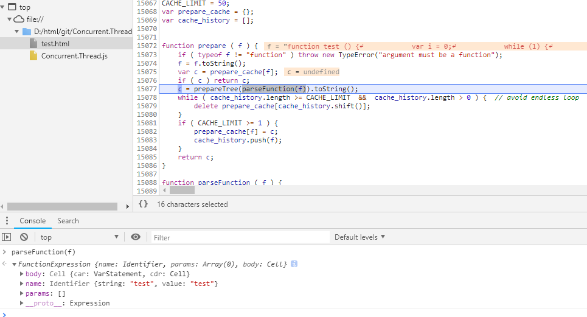
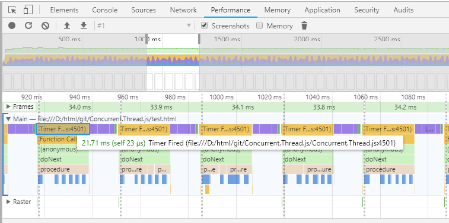
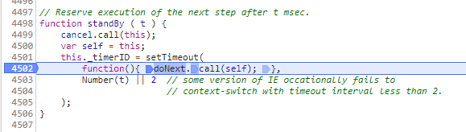

最近看到了一个帮助没有 Worker 的浏览器开启多进程处理的 js 库 ———— Concurrent.Thread.js。
这个库使古老的单进程的 js 拥有了多进程的能力，这瞬间使我产生了浓厚的兴趣，于是决定去探究一下这个 js 到底是怎么执行的。
一、断点进入 create 函数查看
最直接的方法便是通过断点，进入改 js 的起点，一步一步得深入。

concurrentJs 似乎将传入的函数解析成立 AST

由于之后的代码看得一脸蒙，决定换一种方法去探究该 js
二、查看 devtool performace
谷歌浏览器提供了 performace 用来抓页面的一段时间内 js 的运行情况和页面渲染的情况，这里也可以用这个工具来监听一下 concurrentJs 的运行情况。

从图中可以看出，js 的运行情况似乎是一个循环，图中蓝色部分是 Parse HTML，紫色部分是 Layout，而蓝色框框框中的部分，是一个 timeout 定时器。
点击 timeout 部分可以定位到源码行。

粗读源码发现，concurrentJs 将 js 解析成了多个 timeout，以此达到多进程的效果，让 js 不堵死主进程的效果。